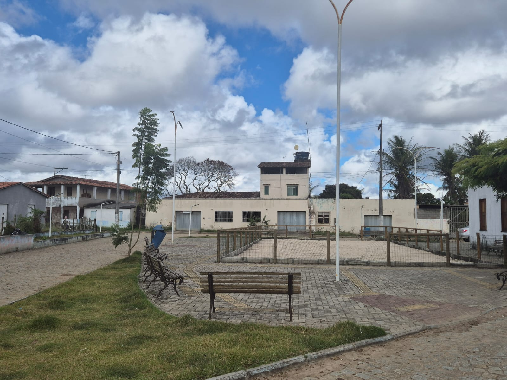
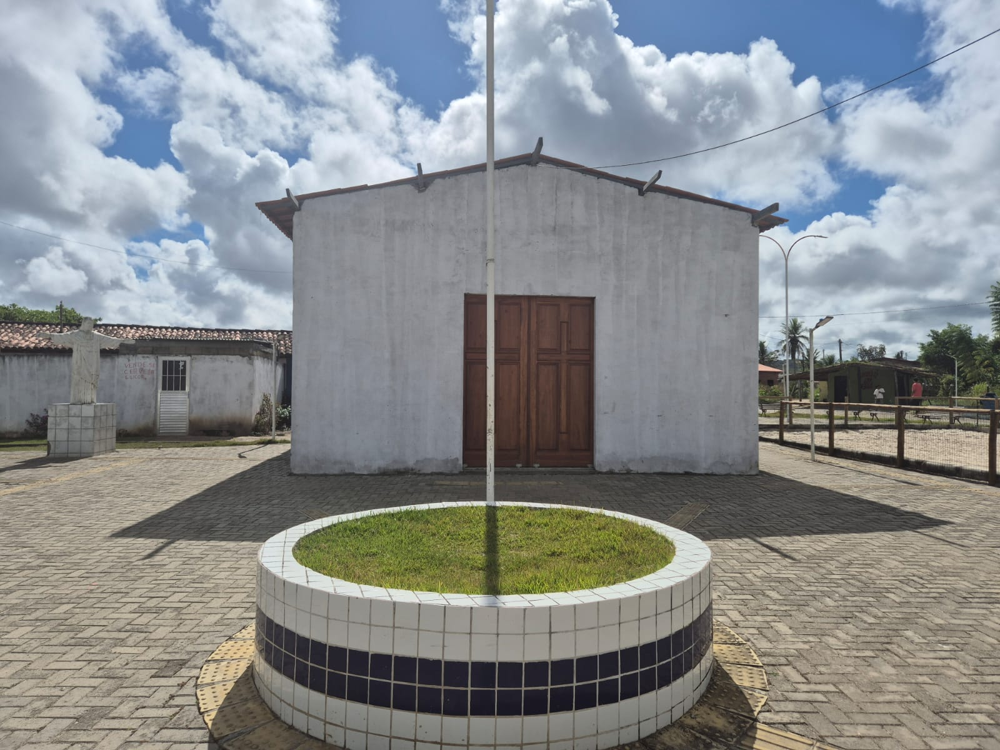
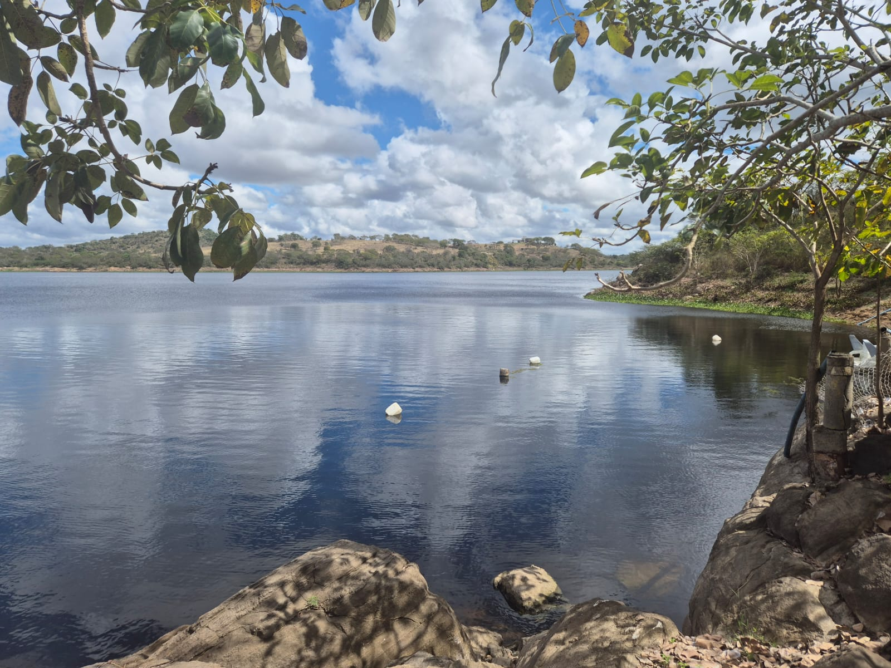
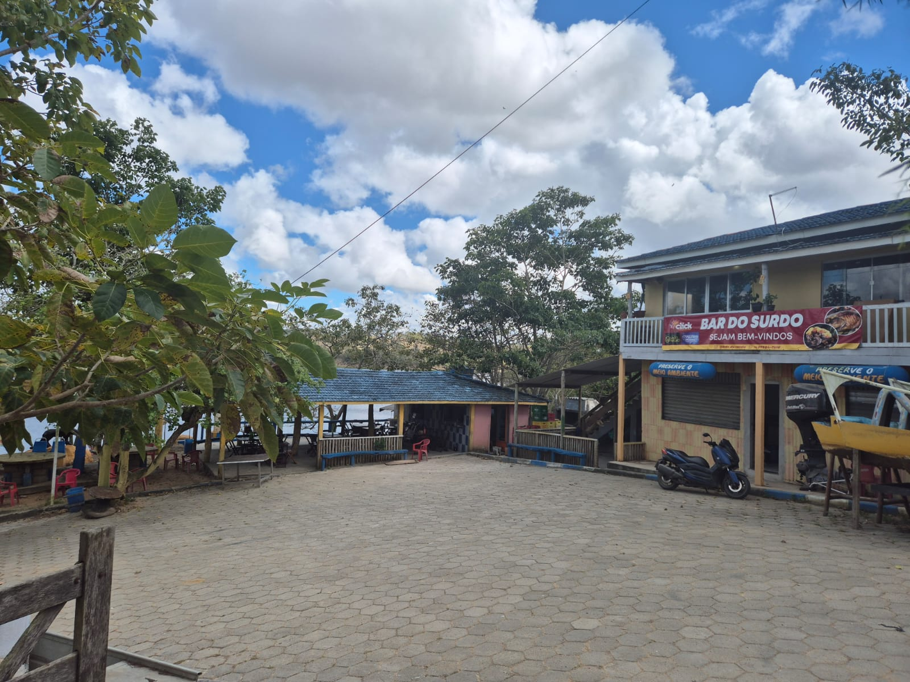
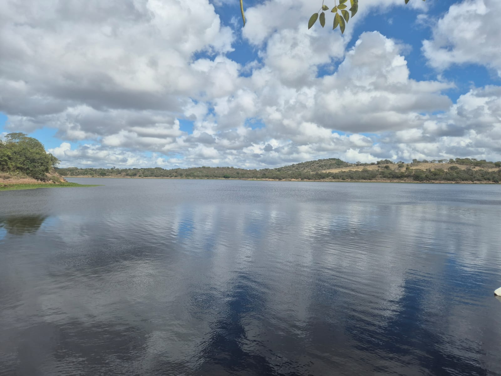

O largo
Espaço de encontro registrado durante a visita.

A visita registrou diferentes dimensões da comunidade: o largo, a igreja, o rio Jacuípe e os caminhos para a outra margem. Esses espaços aparecem relacionados à circulação, ao trabalho, ao comércio, à pesca e às relações entre comunidades.
Mais do que apresentar uma história pronta, registramos o que encontramos e as perguntas que surgiram da visita.

Espaço de encontro registrado durante a visita.

Um ponto para pesquisar santos, devoções, festas e memórias religiosas.

O rio aparece como caminho de trabalho, travessia e relações entre margens.

Onde encontramos uma primeira memória sobre comércio, festas e travessias.
O largo e a igreja ocupam lugar de destaque na paisagem registrada pela equipe e compõem o conjunto visual produzido durante a visita.
As fotografias produzidas pela equipe documentam esses espaços no momento da visita.

No trecho visitado, o Jacuípe já está próximo de seu encontro com o Paraguaçu. A conversa realizada no Bar do Surdo associou o rio a travessias, comércio, festas e relações entre pessoas das duas margens.
O rio separava ou conectava?
O relato registrado durante a visita apresenta o Jacuípe como ligação entre moradores de Conceição da Feira e Antônio Cardoso.
Durante a visita, conversamos com Antônio, conhecido como Surdo. Segundo seu relato, seu pai comercializava entre as feiras de Conceição da Feira e Antônio Cardoso, comprando e vendendo produtos.
Surdo também relatou a permanência das travessias do rio. Segundo ele, moradores de Conceição da Feira participam da festa de São Roque, em Antônio Cardoso, e parte dessas pessoas atravessa o Jacuípe em uma balsa que ele próprio conduz.
O relato é apresentado como memória compartilhada durante a visita e não como entrevista formal.
Esta conexão apareceu na conversa realizada durante a visita e integra o registro produzido pela equipe.